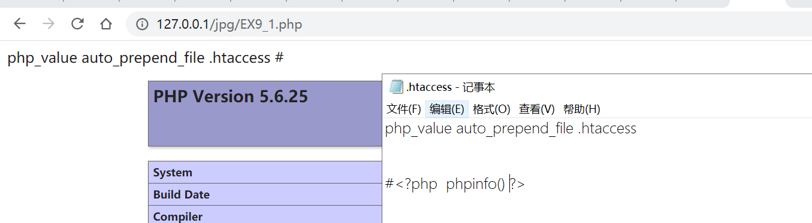

近日刷题发现对基础知识掌握有点不牢固,故逐步整理温习.今天还是先整理下文件包含漏洞.
文件包含是指:程序开发人员把经常使用代码写到一个文件里,在使用时直接调用那个文件而无需重新编写代码的过程称为文件包含.在c语言中的调用头文件和python import调用模块本质上就是一种文件包含。而文件包含漏洞（RFI）是指通过函数包含文件时，没有对包含的文件进行处理导致包含某些敏感文件或恶意文件。
0x01文件包含漏洞的存在点
文件包含漏洞一般出现在文件系统函数的地方。比如include、require、include_once、require_once、highlight_file 、show_source 、readfile 、file_get_contents 、fopen 、file等文件系统函数。其中include、require、include_once、require_once四个函数在包含一个文件时，会执行里面的有php标记的代码。
最简单的，例如：
1 |
|
0x02远程文件包含
当PHP的配置文件allow_url_fopen和allow_url_include设置为ON，include等包含函数可以加载远程文件。通常是被恶意人士用来远程包含一个恶意脚本。
1 | allow_url_fopen = On (允许打开URL文件,预设启用) |
0x03本地文件包含
本地文件包含指包含服务器上的文件。这个方法来用来读取服务器上某些文件的敏感信息或包含执行上传的恶意脚本。
（1）利用目录遍历漏洞来进行文件包含
目录遍历漏洞按我理解就是通过相对路径的方式访问文件.(通过url地址中’../‘ 表上一级目录’./‘表当前目录’/‘表下一级目录).例：访问zhuce.php的上级目录下的flag.php.
但要注意php配置中的include_path与open_basedir的配置：
1.include_path
当寻找要包含的文件时，PHP会分别考虑包含路径中的每个条目。它将检查第一个路径，如果找不到，请检查下一个路径，直到找到包含的文件或返回警告 或错误为止 。
1 | ; UNIX: "/path1:/path2" |
2.open_basedir
将PHP可以访问的文件限制为指定的目录树，包括文件本身。这个指令是不是由安全模式打开或者关闭的影响。在open_basedir为配置时可以用任意遍历目录但有了open_basedir的设置就能够包含设置下的目录。
（2）利用绝对路径来进行文件包含
我们可以通过绝对路径来进行文件包含：
但用绝对路径然而受到open_basedir的限制：
常见的敏感信息的默认绝对路径：
1 | Windows系统： |
（3）利用日志文件机制来进行文件包含
因为服务器日志用记录下我们访问信息与发送的数据.
利用日志文件机制这个机制通过报错将报错的信息写入日志,再通过文件包含包含日志.
（4）利用 .htaccess来进行文件包含
php.ini中auto_prepend_file和auto_append_file分别可以在作用范围内的php文件在文件头/尾自动include指定文件并且可以支持php伪协议.
1 | auto_prepend_file 在页面顶部加载文件 |
注意：auto_prepend_file 与 auto_append_file 只能包含一个php文件，但这个php文件内可以包含多个其他的php文件。
在 .htaccess文件中php_value 可以设置php.ini里的选项,并只在 .htaccess文件所在的文件夹下生效。
1 | php_value auto_prepend_file lexsd6.php |
故可以把代码入.htaccess文件中，再通过auto_prepend_file/auto_append_file包含。即：

同时不仅可以通过.htaccess文件来改变open_basedir来让包含路径不受限制，还可以通过与include_path来改变包含路径。
1 | php_value open_basedir xxx1(允许的路径) |
0x04利用php协议进行包含
在文件包含时可以通过php协议,来绕过一些限制从而进行包含.
PHP中支持的伪协议:
1 | *file:// — 访问本地文件系统 |
大佬总结的图如下:
file://协议
file:// 用于访问本地文件系统，在CTF中通常用来读取本地文件的且不受allow_url_fopen与allow_url_include的影响.
用法: file:// [文件的绝对路径和文件名]
例： file://C:/phpstudy_pro/WWW/flag.php
php://协议
php:// 访问各个输入/输出流（I/O streams），在CTF中经常使用的是php://filter和php://input，php://filter用于读取源码，php://input用于执行php代码。
(1)php://filter
php://filter与file://协议相似在双off的情况下也可以正常使用.
用法: php://filter/筛选过滤方式/resource=<文件>
例:php://filter/read=convert.base64-encode/resource=index.php
其中
1 | resource=<要过滤的数据流> 这个参数是必须的。它指定了你要筛选过滤的数据流。 |
(2)php://input
php://input 是个可以访问请求的原始数据的只读流,可以读取到post没有解析的原始数据, 将post请求中的数据作为PHP代码执行。因为它不依赖于特定的 php.ini 指令。
ps：enctype=”multipart/form-data” 或allow_url_include=off 的时候 php://input 是无效的。
用法：php://input (post 方式提交php代码)
data://协议
又称为RFC 2397 协议,data://协议在‘allow_url_fopen =on ’与v‘allow_url_include：on’
且php 版本大于等于 php5.2 才能生效。
用法 data://资源类型;编码,内容 （‘data://’也可以写成‘data:’）
例：
1 | http://127.0.0.1/test.php?a=data://text/plain,<?php phpinfo()?> |